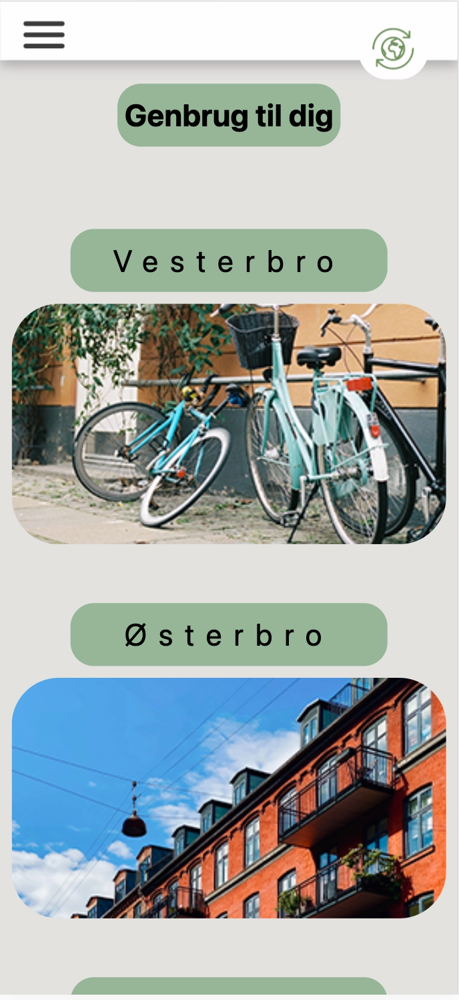

03_UX/UI
Tema beskrivelse:
UX (brugeroplevelse) udgør en integreret del af udviklingen af digitale brugergrænseflader, og disciplinen spænder bredt over alle fem fagområder inden for uddannelsen. Dette tema giver dig en grundlæggende forståelse af samspillet mellem brugere og brugergrænseflader. Derudover vil du blive introduceret til teorier, værktøjer og metoder, som du kan anvende i forskning, design og testning under udviklingen af digitale produkter.
I denne opgave var vi ansvarlige for selv at skabe vores egen komplette hjemmeside, hvor vi skulle vælge både emne og omfang af de elementer, vi ønskede at integrere på hjemmesiden. Derudover udførte vi omfattende forarbejde, herunder udvikling af storyboard, moodboard, styletile og crazy 8. Disse trin gav os ikke kun en dybere forståelse, men guider os også i retning af et endeligt design.
mit emne
Her ses min powerpoint præsentations, som vi skulle lave, så vi lærte at piche vores ideer, som er en icentiel mulighed, når man skal ud på arbejdsmarket.
Klik her eller på billedet for at se min procesdokumentation
Klik her eller på billedet for at se mit visitkort
Her ser alt den dokumentation, som jeg har nedskrevet under hele opgaven, så i som lærer kan se hvordan og hvorfor jeg har valgt at gøre som jeg her.
 Klik her eller på billedet for at se min
procesdokumentation
Klik her eller på billedet for at se min
procesdokumentation
Galleri


Nedenfor vises min tilgang og løsning af diverse opgaver, der danner grundlag for en større projekt. Du vil finde mit moodboard, styletile, wireframe og idegenerering, alle udført i Figma. Crazy 8 er håndtegnet på papir, mens storyboardet, da jeg ikke særlig god til at tegne, er lavet i Word og placeret nederst i venstre hjørne.